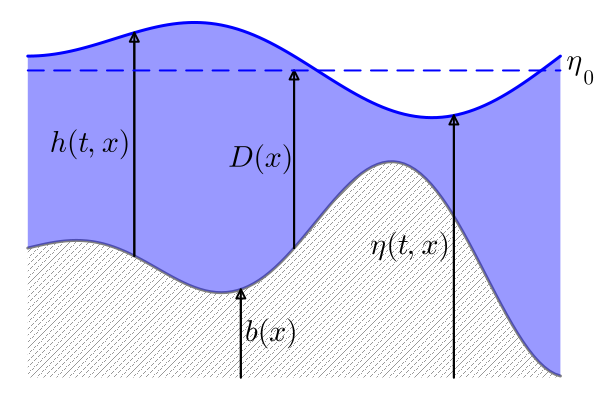
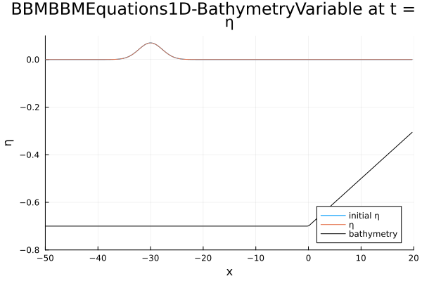

Overview and Tutorial
Dispersive Shallow Water Models
DispersiveShallowWater.jl currently provides six different dispersive shallow water equation systems that can be used for modeling water waves. Each equation system offers different levels of physical accuracy, computational complexity, and supports various boundary conditions and bathymetry types. The following table provides an overview of the supported features for each equation type:
| Equation | Variables | Periodic boundary conditions | Reflecting boundary conditions | Flat Bathymetry | Mild-slope Bathymetry | Variable Bathymetry | Relaxation | Source Terms |
|---|---|---|---|---|---|---|---|---|
KdV | $(\eta)$ | ✅ | ❌ | ✅ | ❌ | ❌ | ✅ | ✅ |
BBM | $(\eta)$ | ✅ | ❌ | ✅ | ❌ | ❌ | ✅ | ✅ |
BBM-BBM | $(\eta, v, D)$ | ✅ | ✅ | ✅ | ❌ | ✅ | ✅ | ✅ |
Svärd-Kalisch | $(\eta, v, D)$ | ✅ | ✅ᵃ | ❌ | ❌ | ✅ | ✅ | ✅ |
Serre-Green-Naghdi | $(\eta, v, D)$ | ✅ | ✅ | ✅ | ✅ | ✅ | ✅ | ✅ |
Hyperbolic SGN | $(\eta, v, D, w, H)$ | ✅ | ✅ | ✅ | ✅ | ❌ | ✅ | ✅ |
ᵃReflecting boundary conditions for Svärd-Kalisch equations require alpha = gamma = 0
Variable Descriptions
- $\eta$: Total water height
- $v$: Velocity in horizontal direction
- $D$: Still-water depth
- $w$: Auxiliary variable in hyperbolic approximation ($\approx -h v_x$)
- $H$: Auxiliary variable in hyperbolic approximation ($\approx h$)
Introduction
In this tutorial we describe how to numerically solve the BBM-BBM (Benjamin-Bona-Mahony) equations with variable bottom topography in one dimension. The equations describe a dispersive shallow water model, i.e. they extend the well-known shallow water equations in the sense that dispersion is modeled. The shallow water equations are a system of first order hyperbolic partial differential equations that can be written in the form of a balance law. In contrast, the BBM-BBM equations additionally include third-order mixed derivatives. In primitive variables $q = (\eta, v)$ they can be written as:
\[\begin{aligned} \eta_t + ((\eta + D)v)_x - \frac{1}{6}(D^2\eta_{xt})_x &= 0,\\ v_t + g\eta_x + \left(\frac{1}{2}v^2\right)_x - \frac{1}{6}(D^2v_t)_{xx} &= 0. \end{aligned}\]
All equations in DispersiveShallowWater.jl follow the same variable conventions: $\eta = h + b$ describes the total water height, $h$ the water height above the bottom topography (bathymetry), $b = \eta_0 - D$ the bathymetry, and $v$ the velocity in horizontal direction. The reference water height $\eta_0$ (also called still water height) and gravitational acceleration $g$ are used consistently across all equations. For the BBM-BBM equations specifically, $\eta_0$ is typically set to 0.
A sketch of the water height and bathymetry can be found below.

Basic Example
In order to conduct a numerical simulation with DispersiveShallowWater.jl, we perform the following steps.
First, we load the necessary libraries:
using DispersiveShallowWater, OrdinaryDiffEqTsit5Define physical setup
As a first step of a numerical simulation, we define the physical setup we want to solve. This includes the set of equations, potentially including physical parameters, initial and boundary conditions as well as the domain. In the following example, the initial condition describes a traveling wave that moves towards a beach, which is modeled by a linearly increasing bathymetry.
equations = BBMBBMEquations1D(bathymetry_type = bathymetry_variable, gravity = 9.81)
function initial_condition_shoaling(x, t, equations::BBMBBMEquations1D, mesh)
A = 0.07 # amplitude of wave
x0 = -30 # initial center
eta = A * exp(-0.1*(x - x0)^2)
v = 0
D = x <= 0.0 ? 0.7 : 0.7 - 1/50 * x
return SVector(eta, v, D)
end
initial_condition = initial_condition_shoaling
boundary_conditions = boundary_condition_periodic
coordinates_min = -130.0
coordinates_max = 20.0
N = 512
mesh = Mesh1D(coordinates_min, coordinates_max, N)Mesh1D{Float64}
xmin: -130.0
xmax: 20.0
N: 512The first line specifies that we want to solve the BBM-BBM equations with variable bathymetry using a gravitational acceleration of $g = 9.81$. Afterwards, we define the initial condition, which is described as a function with the spatial variable x, the time t, the equations and a mesh as parameters.
If an analytical solution is available, the time variable t can be used, and the initial condition can serve as an analytical solution to be compared with the numerical solution. Otherwise, you can just keep the time variable unused.
An initial condition in DispersiveShallowWater.jl is supposed to return an SVector holding the values for each of the unknown variables. Since the bathymetry is treated as a variable (with time derivative 0) for convenience, we need to provide the value for the primitive variables eta and v as well as for D.
Next, we choose periodic boundary conditions. DispersiveShallowWater.jl also supports reflecting boundary conditions for some but not all equations. For more information see the Dispersive Shallow Water Models overview.
Lastly, we define the physical domain as the interval from -130 to 20 (in meters) and we choose 512 nodes. The mesh is always homogeneous, i.e. the distance between consecutive nodes is constant. We choose the left boundary very far to the left in order to avoid interactions between left- and right-traveling waves. This prevents unwanted wave interference that could occur when waves wrap around due to the periodic boundary conditions.
Define numerical solver
In the next step, we build a Semidiscretization that bundles all ingredients for the spatial discretization of the model. Especially, we need to define a Solver.
The simplest way to define a solver when working with boundary_condition_periodic is to call the constructor by providing the mesh and a desired order of accuracy.
In the following example, we use an accuracy order of 4. The default constructor simply creates periodic first-, second-, and third-derivative central finite difference summation-by-parts (SBP) operators of the provided order of accuracy.
How to use other summation-by-parts operators, is described in the section on how to customize the solver. Note that for non-periodic boundary conditions, the solver also needs to be created with non-periodic operators, see, e.g. examples/bbm_bbm_1d/bbm_bbm_1d_basic_reflecting.jl.
accuracy_order = 4
solver = Solver(mesh, accuracy_order)
semi = Semidiscretization(mesh, equations, initial_condition, solver, boundary_conditions = boundary_conditions)Semidiscretization
#spatial dimensions: 1
mesh: Mesh1D{Float64} with length 512
equations: BBMBBMEquations1D-BathymetryVariable
initial condition: initial_condition_shoaling
boundary condition: boundary_condition_periodic
source terms: nothingFinally, we put the mesh, the equations, the initial_condition, the solver and the boundary_conditions together in a semidiscretization semi.
Solve system of ordinary differential equations
Once we have obtained a semidiscretization, we can solve the resulting system of ordinary differential equations. To do so, we specify the time interval that we want to simulate and obtain an ODEProblem from the SciML ecosystem for ordinary differential equations by calling semidiscretize on the semidiscretization and the time span.
Finally, the ode can be solved using the interface from OrdinaryDiffEq.jl. This means we can specify a time-stepping scheme we want to use, the tolerances for the adaptive time-stepping, and the time values, where the solution values should be saved. In this case, we use the adaptive explicit Runge-Kutta method Tsit5 by Tsitouras of order 5(4), which is implemented in the subpackage OrdinaryDiffEqTsit5.jl. If you want to use other time-stepping schemes, you can install the respective subpackage or the whole package OrdinaryDiffEq.jl, which will install every available solver. Here, we save the solution at 100 equidistant points.
tspan = (0.0, 25.0)
ode = semidiscretize(semi, tspan)
saveat = range(tspan..., length = 100)
sol = solve(ode, Tsit5(), abstol = 1e-7, reltol = 1e-7, saveat = saveat)retcode: Success
Interpolation: 1st order linear
t: 100-element Vector{Float64}:
0.0
0.25252525252525254
0.5050505050505051
0.7575757575757576
1.0101010101010102
1.2626262626262625
1.5151515151515151
1.7676767676767677
2.0202020202020203
2.272727272727273
⋮
22.97979797979798
23.232323232323232
23.484848484848484
23.737373737373737
23.98989898989899
24.242424242424242
24.494949494949495
24.747474747474747
25.0
u: 100-element Vector{RecursiveArrayTools.ArrayPartition{Float64, Tuple{Vector{Float64}, Vector{Float64}, Vector{Float64}}}}:
([0.0, 0.0, 0.0, 0.0, 0.0, 0.0, 0.0, 0.0, 0.0, 0.0 … 4.18977566412085e-98, 2.634314754138311e-99, 1.628131203594956e-100, 9.89135926907869e-102, 5.907005757043003e-103, 3.467557353096705e-104, 2.0008970917724163e-105, 1.1349342285125057e-106, 6.3279272320138276e-108, 3.468143826672347e-109], [0.0, 0.0, 0.0, 0.0, 0.0, 0.0, 0.0, 0.0, 0.0, 0.0 … 0.0, 0.0, 0.0, 0.0, 0.0, 0.0, 0.0, 0.0, 0.0, 0.0], [0.7, 0.7, 0.7, 0.7, 0.7, 0.7, 0.7, 0.7, 0.7, 0.7 … 0.35859374999999993, 0.35273437499999993, 0.34687499999999993, 0.34101562499999993, 0.33515624999999993, 0.32929687499999993, 0.32343749999999993, 0.31757812499999993, 0.31171874999999993, 0.30585937499999993])
([-3.41008312247592e-55, 3.4668725170718e-55, -1.3090071316357276e-55, 1.0025298019346651e-55, -4.757499737213163e-56, 3.0626688452923413e-56, -1.6138873209492326e-56, 9.686193657617748e-57, -5.331414955057e-57, 3.109017496617075e-57 … -8.172133885455514e-51, 3.2098893479178213e-51, -1.247965252421027e-51, 4.801569597427563e-52, -1.8278414390088075e-52, 6.882764508062557e-53, -2.56254074210941e-53, 9.415119417628123e-54, -3.400653366167405e-54, 9.454464670007706e-55], [9.522687054136741e-56, 2.128374186797796e-58, 5.234205513185417e-56, 1.8503307046162843e-57, 1.5004189886190085e-56, -1.089694899408325e-57, 3.908489837309085e-57, -8.225053496834033e-58, 1.0548289040923953e-57, -3.5937019771381094e-58 … 5.73218880119127e-51, -2.3221265635513443e-51, 9.313552589710285e-52, -3.697616812936819e-52, 1.4528369507936228e-52, -5.648334482756219e-53, 2.172937666463347e-53, -8.267023067515724e-54, 3.2308638823062287e-54, -1.1361833785769803e-54], [0.7, 0.7, 0.7, 0.7, 0.7, 0.7, 0.7, 0.7, 0.7, 0.7 … 0.35859374999999993, 0.35273437499999993, 0.34687499999999993, 0.34101562499999993, 0.33515624999999993, 0.32929687499999993, 0.32343749999999993, 0.31757812499999993, 0.31171874999999993, 0.30585937499999993])
([-3.014135188997258e-52, 2.990564968636041e-52, -1.1479051257424635e-52, 8.771505169045565e-53, -4.152915058273346e-53, 2.7062887239417132e-53, -1.4133043461674084e-53, 8.605664693515606e-54, -4.697768779330843e-54, 2.772721639321614e-54 … -5.913791411945009e-48, 2.3624172659587453e-48, -9.34596912588269e-49, 3.660888422149195e-49, -1.41956772033391e-49, 5.4479509310793035e-50, -2.06841346430279e-50, 7.752542269081897e-51, -2.8597996138658074e-51, 8.176982976762809e-52], [1.187649657341713e-52, -1.2253340714836119e-54, 6.364896215846602e-53, 1.603858868725758e-54, 1.8461478488166081e-53, -1.420482904038829e-54, 4.912798506455132e-54, -1.0090548477934178e-54, 1.3494197526626415e-54, -4.409095638154349e-55 … 5.86990377186043e-48, -2.4152590789312285e-48, 9.843902632680287e-49, -3.9733916059657736e-49, 1.588051088672008e-49, -6.283534728273244e-50, 2.461637284367502e-50, -9.541452007006669e-51, 3.803886171880297e-51, -1.3626243295884973e-51], [0.7, 0.7, 0.7, 0.7, 0.7, 0.7, 0.7, 0.7, 0.7, 0.7 … 0.35859374999999993, 0.35273437499999993, 0.34687499999999993, 0.34101562499999993, 0.33515624999999993, 0.32929687499999993, 0.32343749999999993, 0.31757812499999993, 0.31171874999999993, 0.30585937499999993])
([-5.791496334114686e-50, 5.617351770364631e-50, -2.1901680811194615e-50, 1.6701852722413876e-50, -7.893533111967677e-51, 5.202427217361849e-51, -2.694897187442277e-51, 1.6635788480642848e-51, -9.010734593567885e-52, 5.3820441596535526e-52 … -9.358818633597749e-46, 3.801257644182541e-46, -1.5296990354500062e-46, 6.097891327681215e-47, -2.407501795907796e-47, 9.411747392441481e-48, -3.6417882439962283e-48, 1.3914994419432914e-48, -5.238594569744666e-49, 1.5387889556694233e-49], [2.771039866199226e-50, -6.25787010082671e-52, 1.4502252266940817e-50, 2.1738250113095257e-52, 4.256448415385514e-51, -3.464622352095734e-52, 1.156173572498614e-51, -2.3236698313226928e-52, 3.2300956326118258e-52, -1.0142644386265503e-52 … 1.1278390042642166e-45, -4.713678578843158e-46, 1.9522326443549782e-46, -8.011002223003558e-47, 3.256493197641889e-47, -1.3111564191961252e-47, 5.2296634599267825e-48, -2.064556489647409e-48, 8.393148414021527e-49, -3.0614171462063474e-49], [0.7, 0.7, 0.7, 0.7, 0.7, 0.7, 0.7, 0.7, 0.7, 0.7 … 0.35859374999999993, 0.35273437499999993, 0.34687499999999993, 0.34101562499999993, 0.33515624999999993, 0.32929687499999993, 0.32343749999999993, 0.31757812499999993, 0.31171874999999993, 0.30585937499999993])
([-4.8692964828730107e-48, 4.6273607024222223e-48, -1.830338059320434e-48, 1.393333198318264e-48, -6.576873332465395e-49, 4.378877091997483e-49, -2.2523332061224357e-49, 1.407987372903095e-49, -7.572156657267949e-50, 4.574360109688789e-50 … -6.558368217844727e-44, 2.706235494664329e-44, -1.1068143733797421e-44, 4.485902277772785e-45, -1.801409941611885e-45, 7.165856908538143e-46, -2.822567777865714e-46, 1.0980736006878246e-46, -4.213303241119439e-47, 1.2690340854576724e-47], [2.654423216350514e-48, -9.03824637573973e-50, 1.3599643567590395e-48, 7.068976920270183e-51, 4.036955250681843e-49, -3.4626857581050036e-50, 1.117433191558325e-49, -2.204960310455032e-50, 3.1711438932961473e-50, -9.60513212234503e-51 … 8.999732343817736e-44, -3.817920268880318e-44, 1.6056262759518193e-44, -6.692853142833728e-45, 2.7647511196786143e-45, -1.1316585398528771e-45, 4.5908442073886576e-46, -1.8438680132009774e-46, 7.634502681548879e-47, -2.832134673168295e-47], [0.7, 0.7, 0.7, 0.7, 0.7, 0.7, 0.7, 0.7, 0.7, 0.7 … 0.35859374999999993, 0.35273437499999993, 0.34687499999999993, 0.34101562499999993, 0.33515624999999993, 0.32929687499999993, 0.32343749999999993, 0.31757812499999993, 0.31171874999999993, 0.30585937499999993])
([-2.477034543609051e-46, 2.308259563617403e-46, -9.260249480710503e-47, 7.037862079369363e-47, -3.3193298355426476e-47, 2.231561291934635e-47, -1.1403880318852828e-47, 7.217229341383308e-48, -3.854636655853896e-48, 2.3555413315144316e-48 … -2.7837323605331234e-42, 1.1669742211101113e-42, -4.850564159250733e-43, 1.998711329325875e-43, -8.163194350081725e-44, 3.3039119818698905e-44, -1.3246084724207205e-44, 5.246013541527995e-45, -2.051259048528694e-45, 6.333596256875261e-46], [1.495170194037103e-46, -6.816306652779834e-48, 7.50560682352798e-47, -3.663823301326997e-49, 2.254002841944487e-47, -2.0376374374858058e-48, 6.356464213334151e-48, -1.2339625347430342e-48, 1.832211659828673e-48, -5.358761924349648e-49 … 4.2212862412828926e-42, -1.81799163416444e-42, 7.764498700566976e-43, -3.288082117345386e-43, 1.3804227691581415e-43, -5.744627305341343e-44, 2.3704289129752666e-44, -9.68642308330193e-45, 4.084838079343482e-45, -1.5411472879658417e-45], [0.7, 0.7, 0.7, 0.7, 0.7, 0.7, 0.7, 0.7, 0.7, 0.7 … 0.35859374999999993, 0.35273437499999993, 0.34687499999999993, 0.34101562499999993, 0.33515624999999993, 0.32929687499999993, 0.32343749999999993, 0.31757812499999993, 0.31171874999999993, 0.30585937499999993])
([-8.642274154473553e-45, 7.907218021284958e-45, -3.2154519757484945e-45, 2.440189138722024e-45, -1.1504493175873692e-45, 7.804591579772503e-46, -3.965251249589307e-46, 2.5391509479132217e-46, -1.347304113644209e-46, 8.327099919631222e-47 … -8.146598231392558e-41, 3.468398447190611e-41, -1.4646101568686722e-41, 6.133192966139129e-42, -2.5465478424716624e-42, 1.0481493614693987e-42, -4.275023202654439e-43, 1.7226170923968854e-43, -6.85997250715467e-44, 2.1694996579996556e-44], [5.659736519261749e-45, -3.2160808715249133e-46, 2.7878481280785546e-45, -4.156854238382223e-47, 8.468989742655765e-46, -8.055669580372675e-47, 2.4312412273555557e-46, -4.655121469714621e-47, 7.113733676838402e-47, -2.0135380679185327e-47 … 1.3373818301040555e-40, -5.845705324828807e-41, 2.5347358911278007e-41, -1.0901360998990417e-41, 4.6495963075336e-42, -1.9664359992961177e-42, 8.249777647505697e-43, -3.428189976906437e-43, 1.4716261224739152e-43, -5.643811676770774e-44], [0.7, 0.7, 0.7, 0.7, 0.7, 0.7, 0.7, 0.7, 0.7, 0.7 … 0.35859374999999993, 0.35273437499999993, 0.34687499999999993, 0.34101562499999993, 0.33515624999999993, 0.32929687499999993, 0.32343749999999993, 0.31757812499999993, 0.31171874999999993, 0.30585937499999993])
([-2.2469886431948972e-43, 2.020919315909731e-43, -8.325609753584373e-44, 6.309878886459328e-44, -2.9749415410100044e-44, 2.0352650004872724e-44, -1.0287256921294553e-44, 6.661701694076136e-45, -3.5131162596138785e-45, 2.1956657103532844e-45 … -1.7853779792897848e-39, 7.717244847595678e-40, -3.309502462282788e-40, 1.4078781189857412e-40, -5.940231299618271e-41, 2.485306607236109e-41, -1.0307190097402169e-41, 4.2234834476799736e-42, -1.7120289613139863e-42, 5.541380235485657e-43], [1.5744291179455157e-43, -1.0674303106689102e-44, 7.6200695556605e-44, -1.897745158104925e-45, 2.34137001888202e-44, -2.3399299024770804e-45, 6.837245534336416e-45, -1.2943848993368402e-45, 2.0297298069465435e-45, -5.571845301975507e-46 … 3.128739215210952e-39, -1.3875767083549256e-39, 6.1066159430964995e-40, -2.6664042393953845e-40, 1.1549682070922024e-40, -4.96228325872462e-41, 2.1157310738988097e-41, -8.936536972500501e-42, 3.903016134619621e-42, -1.5207919278300547e-42], [0.7, 0.7, 0.7, 0.7, 0.7, 0.7, 0.7, 0.7, 0.7, 0.7 … 0.35859374999999993, 0.35273437499999993, 0.34687499999999993, 0.34101562499999993, 0.33515624999999993, 0.32929687499999993, 0.32343749999999993, 0.31757812499999993, 0.31171874999999993, 0.30585937499999993])
([-4.628925174117224e-42, 4.096437015045905e-42, -1.7090212399473086e-42, 1.29367571733462e-42, -6.101924025914154e-43, 4.20772950739683e-43, -2.117071816297648e-43, 1.3857990086657359e-43, -7.265820872467704e-44, 4.591502966623964e-44 … -3.110754267966541e-38, 1.3649349866707084e-38, -5.943099094391466e-39, 2.5676896469201304e-39, -1.1006030411246832e-39, 4.679232883720148e-40, -1.9725666800179156e-40, 8.216326713929668e-41, -3.3888818733297853e-41, 1.1219806414244728e-41], [3.436398773331159e-42, -2.7010060802315912e-43, 1.6360743975950282e-42, -5.714284675801563e-44, 5.084460212309076e-43, -5.332960703893148e-44, 1.509446432042587e-43, -2.831882535092122e-44, 4.544611085808598e-44, -1.212226112858533e-44 … 5.763391430931493e-38, -2.592495596131706e-38, 1.1578645411977871e-38, -5.131675706488609e-39, 2.2568818850834816e-39, -9.848087185702008e-40, 4.2659829554518714e-40, -1.8309203706838067e-40, 8.132690718742084e-41, -3.218413644884419e-41], [0.7, 0.7, 0.7, 0.7, 0.7, 0.7, 0.7, 0.7, 0.7, 0.7 … 0.35859374999999993, 0.35273437499999993, 0.34687499999999993, 0.34101562499999993, 0.33515624999999993, 0.32929687499999993, 0.32343749999999993, 0.31757812499999993, 0.31171874999999993, 0.30585937499999993])
([-7.857915830867565e-41, 6.848296250842136e-41, -2.8924289101722886e-41, 2.1870353996889034e-41, -1.0324014726284001e-41, 7.172580721061109e-42, -3.594229704559647e-42, 2.377329767642048e-42, -1.2396180868931022e-42, 7.919952954932859e-43 … -4.476663921578154e-37, 1.994319210104747e-37, -8.813924517504874e-38, 3.866940131035893e-38, -1.683489249313334e-38, 7.27143465992451e-39, -3.115045291920775e-39, 1.3185598429576217e-39, -5.53213370716429e-40, 1.872645083129062e-40], [6.135795821685511e-41, -5.47938166049406e-42, 2.876582310355664e-41, -1.2953319044180765e-42, 9.041769271613697e-42, -9.945582631791875e-43, 2.7276431570206336e-42, -5.0825679466332034e-43, 8.326625890971653e-43, -2.1619721964401776e-43 … 8.712763857605314e-37, -3.97080393664324e-37, 1.8003008244449054e-37, -8.096302239642933e-38, 3.6148575934834613e-38, -1.601686728484105e-38, 7.047575339595694e-39, -3.072735458971484e-39, 1.3877076585649777e-39, -5.57606429632216e-40], [0.7, 0.7, 0.7, 0.7, 0.7, 0.7, 0.7, 0.7, 0.7, 0.7 … 0.35859374999999993, 0.35273437499999993, 0.34687499999999993, 0.34101562499999993, 0.33515624999999993, 0.32929687499999993, 0.32343749999999993, 0.31757812499999993, 0.31171874999999993, 0.30585937499999993])
⋮
([-0.0021774306314293647, -0.001096563997222783, -0.0005868797227387033, 0.0007261992962718627, 5.831128633786115e-6, -1.8271192566441276e-5, 0.0016102571812587592, 0.002914053021799518, 0.0030755056272889713, 0.006582530888452309 … -0.002236588149100833, -0.003436277955086637, -0.0015886772320026327, -0.0030508653670452447, -0.002755257083274879, -0.0021379516479405696, -0.002523028266550162, -0.002443267682816251, -0.0016176141359682714, -0.00240565093461868], [-0.005466733379849355, -0.0029827075366171503, -0.0016715018904772674, -0.0028544103013874765, 0.0008811251707777473, 0.0041937695608563344, 0.0040083157006243824, 0.008621015937998347, 0.016422617744702276, 0.01834059233052492 … 0.013622840421340461, 0.005385594375546484, 0.009799079309055927, 0.0003254490463698902, -0.0026304289361222376, -0.004260423176630219, -0.011963428538217366, -0.016349647990346917, -0.013543208853914732, -0.015416613311115207], [0.7, 0.7, 0.7, 0.7, 0.7, 0.7, 0.7, 0.7, 0.7, 0.7 … 0.35859374999999993, 0.35273437499999993, 0.34687499999999993, 0.34101562499999993, 0.33515624999999993, 0.32929687499999993, 0.32343749999999993, 0.31757812499999993, 0.31171874999999993, 0.30585937499999993])
([-0.0025097527697260148, -0.0018219245529319872, -0.0012143769164303419, -0.0004377128351241935, -0.0013903050167783316, -0.0006366364027964676, 0.0003624031361003788, 9.592526835873034e-5, 0.0008002644109002316, 0.003218647825046793 … -0.0007546651509170671, -0.0024595025539815856, -0.0012442743852892934, -0.0011405080536935083, -0.0017703774560602179, -0.0011864226039568846, -0.0009363609832375319, -0.0021817271407895255, -0.0019235845023911676, -0.002236750757296425], [-0.008497859171435952, -0.00805371780015765, -0.006699153450290633, -0.0048777170916397584, -0.00016327857959336955, -0.0011060485788321275, -0.0028032995483739612, 0.0017408774683960791, 0.005072257065011546, 0.007550016473428373 … 0.014932572303312767, 0.005088539053305759, 0.006589974354297085, 0.0035669940176312354, -0.00429544119546045, -0.006660473445040738, -0.009320268420450807, -0.015977776274176986, -0.013387273203767038, -0.01464603728540992], [0.7, 0.7, 0.7, 0.7, 0.7, 0.7, 0.7, 0.7, 0.7, 0.7 … 0.35859374999999993, 0.35273437499999993, 0.34687499999999993, 0.34101562499999993, 0.33515624999999993, 0.32929687499999993, 0.32343749999999993, 0.31757812499999993, 0.31171874999999993, 0.30585937499999993])
([-0.0018665093733562302, -0.002110364962880296, -0.0020147910680111615, -0.0018796985422313188, -0.0021042636149081455, -0.0005318922963623892, -0.0005645496861406288, -0.0013744378676771142, -0.00039142305638801487, 0.0003907601421350204 … -0.00024732328073584785, -0.0008227867879425474, -0.0009488266122127316, 7.57212146811469e-5, -0.00013611215128144738, -0.0007434959940723339, -0.00020290406305315244, -0.0014173912353601477, -0.001927643819772919, -0.0015077950913581547], [-0.008812149209150758, -0.009902846581768205, -0.00903469922864306, -0.005977512627650124, -0.002748290853622201, -0.005442771453382289, -0.004713999341882945, -0.001429899663269047, -0.002556289171650466, -0.00027990667612986343 … 0.012590144588701235, 0.007169540498582573, 0.0022811205547861296, 0.0027321226158823196, -0.002624500307573781, -0.008233080630074567, -0.005737592424272178, -0.009986616729745084, -0.012892514289241094, -0.013891552201664862], [0.7, 0.7, 0.7, 0.7, 0.7, 0.7, 0.7, 0.7, 0.7, 0.7 … 0.35859374999999993, 0.35273437499999993, 0.34687499999999993, 0.34101562499999993, 0.33515624999999993, 0.32929687499999993, 0.32343749999999993, 0.31757812499999993, 0.31171874999999993, 0.30585937499999993])
([-0.0011358944988661553, -0.0019781433781777243, -0.0024002351250667314, -0.002715858314207453, -0.0022227876764123176, -0.000772350290822207, -0.0016060053726092856, -0.0016919916648021661, -0.0007302445322456748, -0.0012931104241188619 … -0.00027950233480470484, 0.0006145242708866335, 5.51612007098032e-5, 0.0003787360131527723, 0.001048037400643621, -0.00025823105279265955, -0.00030058053358722773, -0.0003386364312134454, -0.0011600806985225614, -0.0008920663649516358], [-0.006532277814457844, -0.0076345207543911196, -0.008180069484207885, -0.007064035926405758, -0.007110175083899348, -0.008614728803233784, -0.004365629702325286, -0.0032022541473983937, -0.00598380174516592, -0.0037602195266695396 … 0.007142507898633689, 0.007534899124577293, 0.0008669698068631514, -0.0010494643263576982, 0.0002773179395736662, -0.005092476584656451, -0.0039197543686847695, -0.004563715007848003, -0.01143337374576373, -0.012883896246472976], [0.7, 0.7, 0.7, 0.7, 0.7, 0.7, 0.7, 0.7, 0.7, 0.7 … 0.35859374999999993, 0.35273437499999993, 0.34687499999999993, 0.34101562499999993, 0.33515624999999993, 0.32929687499999993, 0.32343749999999993, 0.31757812499999993, 0.31171874999999993, 0.30585937499999993])
([-0.0008521948194051537, -0.0015147477475260934, -0.0019404565319782988, -0.002399548489264757, -0.0019208164142739878, -0.001604322793344485, -0.0025961150923486096, -0.0014930536633282483, -0.0009632843706362319, -0.0019265352727883813 … 1.3184734501992542e-5, 0.0010888559916509605, 0.0013320756810936737, 0.00040941781491727453, 0.0010592748210102206, 0.0004988570764762216, -0.00021599681611690215, 0.0004895297794953589, -0.00013354126505432402, -0.0006564738073425686], [-0.003570316010159372, -0.003837014736900732, -0.00564860481228225, -0.007411798188826664, -0.010085148817497641, -0.009458736423355861, -0.004557996532626268, -0.0058290644668898845, -0.006776194859385244, -0.004276481885915741 … 0.002572348468324848, 0.004037231940953431, 0.00252202917669183, -0.0024155302216641965, 0.0015396225481104867, 0.0004650623136456085, -0.00358239898278282, -0.003202555567094657, -0.007812621216968008, -0.009530264748267625], [0.7, 0.7, 0.7, 0.7, 0.7, 0.7, 0.7, 0.7, 0.7, 0.7 … 0.35859374999999993, 0.35273437499999993, 0.34687499999999993, 0.34101562499999993, 0.33515624999999993, 0.32929687499999993, 0.32343749999999993, 0.31757812499999993, 0.31171874999999993, 0.30585937499999993])
([-0.0007943683921754342, -0.0009154964592424831, -0.0009385904424277006, -0.0013287583172306456, -0.001419677426601027, -0.002351374113933175, -0.002892884185268507, -0.0013217540764752327, -0.0016138583382055579, -0.0020111802595053217 … 0.000837210116281335, 0.0007875939003278666, 0.0017770308704650503, 0.00077629465577534, 0.0005303687337446597, 0.0011963216982577777, 0.0005128459279158082, 0.000710817383511593, 0.0003711108774085821, -0.000520094918368284], [-0.001718933114937413, -0.001579277415262865, -0.003410528495736147, -0.006031854970357475, -0.00891094589468112, -0.007489703732301745, -0.006004440049429285, -0.009003340903690092, -0.006680334326624209, -0.004557980708320897 … 0.0013109207266093288, -0.00046842774884684065, 0.00389083542214245, 0.0008313393218651372, 0.0007449333066837758, 0.0029909751115170715, -0.0026065128184977436, -0.003208712441615124, -0.0027141106856824787, -0.004160055088640634], [0.7, 0.7, 0.7, 0.7, 0.7, 0.7, 0.7, 0.7, 0.7, 0.7 … 0.35859374999999993, 0.35273437499999993, 0.34687499999999993, 0.34101562499999993, 0.33515624999999993, 0.32929687499999993, 0.32343749999999993, 0.31757812499999993, 0.31171874999999993, 0.30585937499999993])
([-0.0005064984086976826, -0.0003949641557488236, -0.00012928617156181035, -0.0004069844669697942, -0.0009064769998670892, -0.0022256865979504237, -0.002120778451433405, -0.0013272801059543804, -0.002449744840016115, -0.0019116838903700186 … 0.0014044591984506587, 0.0005011193429012579, 0.0011026057734715483, 0.001337317955489157, 0.0005478555744551313, 0.0014039277431592725, 0.001213365395280209, 0.0005327425948216652, 0.0002982345325354808, -0.00014893050339006734], [-0.0010597124827862508, -0.0013776737671531794, -0.0021987715047341503, -0.0032152165405527305, -0.004384341771722845, -0.003994168219134038, -0.007213399790091826, -0.010174932931024346, -0.006274649156925089, -0.00614980624461179 … 0.0016067414968944295, -0.0017013206313198628, 0.002414615814258617, 0.004474530457316332, -0.00015531608574334454, 0.0014177703715011706, 0.00011352218216523904, -0.0007873383090596013, 0.0014625684664394808, 0.0005256692041668174], [0.7, 0.7, 0.7, 0.7, 0.7, 0.7, 0.7, 0.7, 0.7, 0.7 … 0.35859374999999993, 0.35273437499999993, 0.34687499999999993, 0.34101562499999993, 0.33515624999999993, 0.32929687499999993, 0.32343749999999993, 0.31757812499999993, 0.31171874999999993, 0.30585937499999993])
([7.754526643380761e-5, -4.847633517937802e-5, 8.580018970132148e-5, -0.00013841188480226958, -0.00047634496215578334, -0.0011901075665505323, -0.0007107908952201165, -0.001342819221117072, -0.002704217430162796, -0.0016315967035742827 … 0.0009565348324084523, 0.0006220401211665627, 0.00024961529537451403, 0.0014883574922716514, 0.0011389229626873694, 0.0010938070566714093, 0.001159957956389867, 0.0004477739211683604, 0.0002077113043007237, 0.00038848479930502194], [-0.00043126574956464306, -0.001402298877707764, -0.0013793941662274655, -0.0004974124210771249, -7.805627572562209e-5, -0.001177792499370486, -0.006371260865465489, -0.0074557612295775635, -0.005255791500433665, -0.00813144338392145 … 0.00019873146569405174, 0.00020852445107273396, -0.0008830838597708252, 0.003555581619662776, 0.00039007402873406446, 2.5495624918667153e-5, 0.0033175210742073303, 0.003394997851855668, 0.0031197001675750146, 0.0027715605305899923], [0.7, 0.7, 0.7, 0.7, 0.7, 0.7, 0.7, 0.7, 0.7, 0.7 … 0.35859374999999993, 0.35273437499999993, 0.34687499999999993, 0.34101562499999993, 0.33515624999999993, 0.32929687499999993, 0.32343749999999993, 0.31757812499999993, 0.31171874999999993, 0.30585937499999993])
([0.0006085997267898307, 0.0001796394709078976, -2.7327468827106278e-5, -0.00025123487377861617, -0.0001352497084125074, -1.7810935262307606e-6, 0.0003891208678549854, -0.0011589969700971064, -0.00187217164789981, -0.0010725227079492435 … -0.00013196965971176315, 0.000784373424331926, 0.00013024842423960063, 0.0009624224179967779, 0.0013127942563922078, 0.0006290637972319782, 0.000586505746064582, 0.0006555025599581473, 0.0004290733923409363, 0.0007349266742612916], [0.0008867225111886636, -8.966666585788724e-5, -0.00015105826430796178, 0.0008443044775135224, 0.0012822495343985324, -0.00024774304586992253, -0.003329536864935235, -0.0020613312531806687, -0.0035683035527064246, -0.008225482989418784 … -0.0033626207293175024, 0.0008219447577886488, -0.003129234130855584, -0.000862525554570938, 0.0017310018958220062, 0.0017603584155694108, 0.004762964926672072, 0.005728354797937584, 0.0030680988919192923, 0.0033224172697253933], [0.7, 0.7, 0.7, 0.7, 0.7, 0.7, 0.7, 0.7, 0.7, 0.7 … 0.35859374999999993, 0.35273437499999993, 0.34687499999999993, 0.34101562499999993, 0.33515624999999993, 0.32929687499999993, 0.32343749999999993, 0.31757812499999993, 0.31171874999999993, 0.30585937499999993])After solving the equations, sol contains the solution for each of the—in this case—three variables at every spatial point for each of the 100 points in time.
Visualize results
After running the simulation, the results can be visualized using Plots.jl, which needs to be imported first. Then, we can plot the solution at the final time by calling plot on a Pair of the Semidiscretization and the corresponding ODESolution sol. The result is depicted in the following picture.
using Plots
plot(semi => sol)
By default, this will plot the bathymetry, but not the initial (analytical) solution.
You can adjust this by passing the boolean values plot_bathymetry (if true, always plot bathymetry in the first subplot) and plot_initial. Note that plot_initial = true will evaluate and plot the initial condition function at the same time t as the numerical solution being displayed (the final time by default). This means if your initial condition function represents an analytical solution, setting plot_initial = true will plot the analytical solution at that specific time for comparison.
Plotting an animation over time can, e.g., be done by the following command, which uses step to plot the solution at a specific time step. Here conversion = waterheight_total makes it so that we only look at the waterheight $\eta$ and not also the velocity $v$. More on conversion functions for plotting can be found at TODO!!.
anim = @animate for step in 1:length(sol.u)
plot(semi => sol, plot_initial = true, conversion = waterheight_total, step = step, xlims = (-50, 20), ylims = (-0.8, 0.1))
end
gif(anim, "shoaling_solution.gif", fps = 25)[ Info: Saved animation to /home/runner/work/DispersiveShallowWater.jl/DispersiveShallowWater.jl/docs/build/shoaling_solution.gif
It is also possible to plot the solution variables at a fixed spatial point over time by calling plot(semi => sol, x) for some x-value, see plot_examples.jl from the reproducibility repository of the master thesis of Joshua Lampert for some examples.
Additional resources
A lot more examples sorted by the simulated equations can be found in the examples/ subdirectory.
More examples, especially focussing on plotting, can be found in the scripts create_figures.jl and plot_examples.jl from the reproducibility repository of the master thesis of Joshua Lampert.
Plain program
Here follows a version of the program without any comments.
using DispersiveShallowWater, OrdinaryDiffEqTsit5
equations = BBMBBMEquations1D(bathymetry_type = bathymetry_variable, gravity = 9.81)
function initial_condition_shoaling(x, t, equations::BBMBBMEquations1D, mesh)
A = 0.07 # amplitude of wave
x0 = -30 # initial center
eta = A * exp(-0.1*(x - x0)^2)
v = 0
D = x <= 0.0 ? 0.7 : 0.7 - 1/50 * x
return SVector(eta, v, D)
end
initial_condition = initial_condition_shoaling
boundary_conditions = boundary_condition_periodic
coordinates_min = -130.0
coordinates_max = 20.0
N = 512
mesh = Mesh1D(coordinates_min, coordinates_max, N)
solver = Solver(mesh, 4)
semi = Semidiscretization(mesh, equations, initial_condition, solver, boundary_conditions = boundary_conditions)
tspan = (0.0, 25.0)
ode = semidiscretize(semi, tspan)
saveat = range(tspan..., length = 100)
sol = solve(ode, Tsit5(), abstol = 1e-7, reltol = 1e-7, saveat = saveat)
using Plots
plot(semi => sol)
anim = @animate for step in 1:length(sol.u)
plot(semi => sol, plot_initial = true, conversion = waterheight_total, step = step, xlims = (-50, 20), ylims = (-0.8, 0.1))
end
gif(anim, "shoaling_solution.gif", fps = 25)